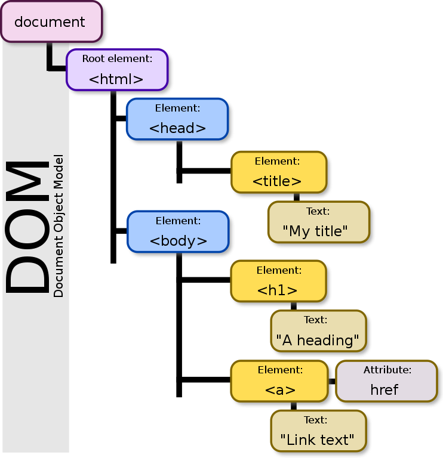

Les bases en Javascript#
Présentation du Javascript#
Le langage HTML (ou Hypertext Markup Language) permet de créer la structure d’une page internet. Grâce à un jeu de balises, il permet de décomposer la page comme un traitement de texte : titre, sous-titre, section,...
Le CSS (ou Cascade Style Sheets) permet la mise en forme des différents éléments HTML.
On peut ainsi modifier la couleur ou la police des éléments précédents.
Les pages ainsi créées sont statiques c’est-à-dire que l’interaction avec l’utilisateur est réduite à la possibilité de cliquer sur un lien hypertexte présent dans la page.
On peut dynamiser la page internet de deux manières :
- soit du côté serveur avec PHP (ou Hypertext Preprocessor) qui peut, par exemple, ajouter le résultat d’une requête à une base de données dans la page qui sera fournie au navigateur ;
- soit du côté client avec JavaScript qui peut, par exemple, faire apparaître des info-bulles contextuelles ou réaliser des animations.
JavaScript est un langage qui a été créé en 1995 par Brendan Eich. Ce dernier a travaillé chez Netscape Communication Corporation principal concurrent à l’époque d’Internet Explorer.
Premier Programme#
Code#
Ne dérogeons pas à la règle traditionnelle qui veut que tous les tutoriels de programmation commencent par afficher le texte « Hello World ! »
Voici un code HTML simple contenant une instruction (nous allons y revenir) JavaScript, placée au
sein d’un élément <script>:
Observations et changements par rapport à Python#
- Un élément
<script>est présent dans la page HTML : c’est cet élément qui contient le code Javascript ; - Le code Javascript ne contient qu’une seule instruction : l’instruction
alert(). Cette instruction permet d’afficher une boîte de dialogue contenant un message. Le message en question est placé entre apostrophes. - La sortie avec la fonction
alert()peut être remplacé par une sortie sur la console grâce à l’instructionconsole.log('Hello world!'). Il faut se rendre sur la console du navigateur (en général : menu puis développement web puis console web) ou encore sur le corps de la page web avec l’instructiondocument.write('Hello world!') - Chaque instruction doit se terminer par un point virgule ;
- Le Javascript, contrairement au Python n’est sensible ni à l’indentation, ni aux espaces ;
- Les commentaires monolignes commencent par deux slashs
//(tandis qu’en Python ils commencent par #) et les commentaires multilignes se font par/*et se termine par*/.
Remarque : on peut aussi placer un commentaire multiligne sur une seule ligne
Exemple :
Exercice 1 :
Afficher son prénom sur une boite de dialogue puis dans la console. Puis y placer un commentaire monoligne et un commentaire multiligne.
Le javascript : un langage comme Python#
Où écrire son code#
Il est possible, et même conseillé, d’écrire le code JavaScript dans un fichier externe, portant
l’extension .js. Ce fichier est ensuite appelé depuis la page Web au moyen de l’élément <script> et
de son attribut src qui contient l’URL du fichier.js. Ce code fichier.js s’insère dans l’HTML de la
manière suivante :
Dans votre éditeur web, taper le code suivant :
Les variables#
Contrairement à python, les variables utilisées en JavaScript doivent être déclarées.
Sachez seulement que :
- let définit des variables dont la portée (l'ensemble des lignes où la variable est connue et utilisable) est celle du bloc ;
- var définit des variables dont la portée est celle de la fonction.
En JavaScript, il existe 7 types de valeurs différents. Chaque valeur qu’on va pouvoir créer et manipuler en JavaScript va obligatoirement appartenir à l’un de ces types. Ces types peuvent être notamment :
- String ou « chaine de caractères » en français ;
- Number ou « nombre » en français ;
- Boolean ou « booléen » en français.
Les conversion de types#
Comme en Python, on peut avoir besoin de convertir une variable d’un type vers un autre. En Javascript, il existe de nombreuses manière de réaliser cette tâche mais les plus simples sont ces fonctions :
parseInt(variableAConvertir, base); Cette fonction se charge de convertir en entier (et dans une certaine base) lavariableAConvertirparseFloat(variableAConvertir ;Cette fonction se charge de convertir en flottantla variableAConvertir;parseString(variableAConvertir) ;Cette fonction se charge de convertir en chaîne de caractère lavariableAConvertir;
Affichage avec la fonction prompt#
La fonction prompt("Question") crée une fenêtre où apparaît la Question et où l’utilisateur dispose d’un champ pour y répondre. La réponse tapée est considérée par Javascript comme un chaîne de caractère.
Exemples :
let name = prompt("Quel est votre prénom");
alert(x) ;
let x = parseInt(prompt("Tapez un valeur x?"),10);
alert(x) ;
Les opérations arithmétiques#
Les opérateurs arithmétiques vont nous permettre d’effectuer toutes sortes d’opérations mathématiques entre les valeurs de type Number contenues dans différentes variables.
Nous allons pouvoir utiliser les opérateurs arithmétiques du tableau 1 en JavaScript :
| Opérateur | Nom de l'opération associée |
|---|---|
| + | Addition |
| - | Soustraction |
| * | Multiplication |
| / | Division |
| % | Modulo (reste d’une division) |
| ** | Puissance |
Tableau 1 – Opérateurs
Exercice 2
1) Écrire un script qui demande une somme en dollars, qui la convertit en euros et qui affiche la somme en euros à l’aide la fonction alert ;
2) Écrire un script dans lequel vous afficherez la valeur de \(x^2 + 3y × z\). Il faudra déclarer quatre variables et afficher le résultat à l’aide de la fonction alert
Les instructions conditionnelles et les boucles#
Condition avec if#
Syntaxe
Exemple :
let x = parseInt(prompt("x?"),10);
if(x > 1){
alert('x est strictement supérieure à 1');
}
else{
alert('x est inférieure ou égale à 1');
}
Les opérateurs de conditions et les opérateurs logiques#
| Opérateur | Définition |
|---|---|
| == | Permet de tester l’égalité sur les valeurs |
| === | Permet de tester l’égalité en termes de valeurs et de types |
| != | Permet de tester la différence en valeurs |
| <> | Permet également de tester la différence en valeurs |
| !== | Permet de tester la différence en valeurs et en types |
| < | Permet de tester si une valeur est strictement inférieure à une autre |
| > | Permet de tester si une valeur est strictement supérieure à une autre |
| <= | Permet de tester si une valeur est inférieure ou égale à une autre |
| >= | Permet de tester si une valeur est supérieure ou égale à une autre |
Tableau 2 – Les opérateurs de comparaison
| Opérateur | Opérateur logique |
|---|---|
| && | et |
| || | ou |
| ! | non |
Tableau 3 – Les opérateurs logiques
Exercice 3
Reprendre l’exercice avec la conversion euro/dollars et ajouter une condition. Si la somme excède 15 euros, afficher "trop cher" et si elle est en dessous ou égale, afficher "on prend" .
While et le for#
La synatxe de la boucle while s’écrit ainsi en Javascript :
Et la boucle for s’écrit ainsi en Javascript :
Modèle
Exemple
Exercice 4
Écrivez une boucle while qui se répète 10 fois. Vous ferez le même exercice avec une boucle for.
Exercice 5
Écrire un script Javascript qui tente de faire deviner un entier de votre choix et affiche, plus petit, ou plus grand jusqu’à la victoire. Vous pourrez utiliser la fonction suivante :
Les fonctions#
La définition d’une fonction est introduite par le mot clé function suivi de ses arguments, puis du code de la fonction entre accolades Le résultat de la fonction est indiqué par le mot-clé return.
Modèle
Exemple :
Pour appeler cette fonction, deux manières sont possibles : soit dans le fichier js soit dans le fichier js.
Exercice 6
1) Écrire une fonction calculant le discriminant \(b^2 + 4\times a\times c\) d'un polynôme de degré 2 . Cette fonction prendra trois arguments : a,b, et c et retournera la valeur du discriminant. 2) Appeler cette fonction dans le fichier html puis dans le js.
Les évènements#
De manière générale, on préfère l'utilisation de let ou const à l'utilisation de var qui date des tous débuts de JavaScript.
Fonctionnement d’un navigateur web#
L’un des principaux attraits de l’interpréteur Javascript d’un navigateur est la possibilité de modifier dynamiquement et en temps réel le rendu d’une page web.
Le navigateur commence par télécharger le fichier HTML correspondant à l’URL visitée. Une fois récupérée, la page est transformée en une structure de donnée d’arbre.

Une fois l’arbre construit, ses noeuds (les éléments du document HTML) sont parcourus, les règles CSS sont appliquées et le rendu graphique de la page est effectué.
Dans un même temps, les scripts Javascript présents dans la page sont exécutés. L’une de leur activité principale est la définition de gestionnaires d’évènements.
Ces gestionnaires d’évènements peuvent modifier librement l’arbre représentant le document.
Ajouter ou supprimer des nœuds dans l’arbre correspond à ajouter ou supprimer les balises correspondant dans le document (encore une fois le fichier original, qu’il soit stocké localement ou sur un serveur n’est pas modifié). Les attributs des balises peuvent aussi être modifiés. Parmi ces attributs, la modification de l’attribut style permet de changer le rendu graphique de l’élément.
Ces changements sont immédiatement répercutés sur l’affichage.
Différentes possibilités de sélection des éléments#
-
Sélection d'un élément par l'arborescence du DOM .
-
Sélection d'un élément par l'attribut
id. Par définition un id n'est associé qu'à un seul élément. -
Sélection de tous les éléments par l'attribut class. Le résultat est un tableau1 des différents éléments.
-
Sélection de tous les éléments par le nom de balise. Le résultat est un tableau1 des différents éléments.
-
Sélection d'un élément (le 1er si il y en a plusieurs) en reprenant la syntaxe des sélecteurs CSS.
-
Sélection de plusieurs éléments en reprenant la syntaxe des sélecteurs CSS : le résultat est dans un tableau1.
Détection des évènements du DOM : DOM events#
Quelques exemples de détection d'évènements.
-
onclick: Le clic de la souris sur un élément -
ondblclick: le double-clic de la souris sur un élément -
onmouseover: le survol de la souris sur un élément. -
onmouseout: la sortie de la souris d'un élément. -
onmousedown: le maintien du clic appuyé sur un élément. -
onmouseup: le relachement du clic de souris.
Lignes à tester#
-
changement de la couleur de fond de la page :
-
réinitialisation de la couleur par défaut :
-
récupération d'un élément \(d\). Cette instruction qui peut remplacer querySelector doit être faite une fois pour que d soit définie, avant de tester les instructions suivantes.
-
changement de style de l'élément \(d\) :
-
Changement de contenu de l'élément \(d\) :
Exercice 7
Tester les différentes instructions précédentes dans des fonctions.